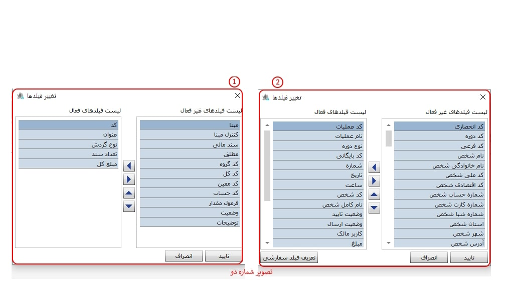
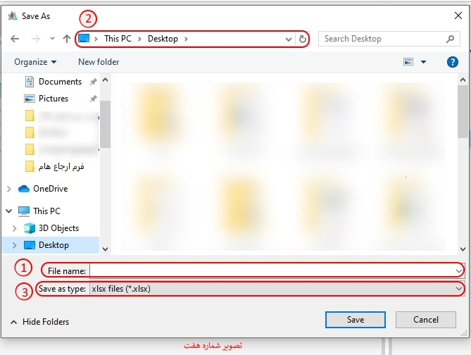

در این بخش، ابزارهای عمومی که در سیستم و زیر سیستم های نرمافزار، به کار رفتهاند، مورد بررسی قرار میگیرند. ممکن است هر یک از این ابزارها در فرمهای مختلف مورد استفاده قرار گرفته باشند.
در تصویر شماره یک، نمونهای از ابزارهایی که در نرمافزار مورد استفاده قرار میگیرند، نمایش داده شده است.

 تغییر فیلدها (Ctrl + H ) :
برای هر یک از فرمهای موجود در نرمافزار، تعدادی فیلد اطلاعاتی تعریف شده است. پس از انتخاب گزینه تغییر فیلدها، میتوانید فیلدهای دلخواه و موردنظر خود را مشاهده نمایید.
تغییر فیلدها (Ctrl + H ) :
برای هر یک از فرمهای موجود در نرمافزار، تعدادی فیلد اطلاعاتی تعریف شده است. پس از انتخاب گزینه تغییر فیلدها، میتوانید فیلدهای دلخواه و موردنظر خود را مشاهده نمایید.
نکته: لازم به ذکر است در هر قسمت از نرمافزار، با انتخاب گزینه تغییر فیلدها، فیلدهای اطلاعاتی مرتبط با همان بخش نمایش داده میشود. (مطابق تصویر شماره ۲)

-کادر شماره یک:
-کادر شماره دو:
فلش به سمت چپ، فیلدهای انتخابشده در بخش فیلدهای غیرفعال را به فهرست فیلدهای فعال منتقل میکند.
فلش به سمت راست، فیلدهای انتخاب نشده در بخش فیلدهای فعال را به فهرست فیلدهای غیر فعال منتقل میکند.
این گزینه امکان جابهجایی موقعیت فیلد فعال انتخابشده را فراهم میکند.

این گزینه امکان جابهجایی موقعیت فیلد فعال انتخابشده را فراهم میکند.

با استفاده از کلید فوق می توانید فیلد مورد نظر خود را در جدول ایجاد نمایید، نمایش فیلد سفارشی مشروط بر آنست که این فیلد در گزارشات پیشین شما محاسبه و «وجود» داشته باشد. برای این منظور این گزینه را کلیک کنید و اکنون پنجره تنظیم فیلدهای سفارشی را مشاهده خواهید کرد.

-کادر شماره یک: با کلیک روی آیکون شماره ۱، میتوانید یک ردیف جدید برای تعریف فیلد سفارشی اضافه کنید.
-کادر شماره دو(نوع): با باز کردن کشوی نوع، میتوانید نوع پارامتر مورد نظر خود را انتخاب نمایید.
-کادر شماره سه(نام پارامتر): در این بخش، میتوانید نام پارامتر مورد نظر خود را وارد نمایید.
-کادر شماره چهار(نام):
-کادر شماره پنج:
-کادر شماره شش:
گروه بندی (Ctrl + G ): برای هر یک از فرمهای موجود در نرمافزار، از طریق قابلیت گروهبندی میتوانید فیلدهای مربوطه را بر اساس ساختار درختی، گروه بندی نمایید.
نکته: لازم به ذکر است در هر قسمت از نرمافزار، با انتخاب گزینه گروه بندی، فیلدهای اطلاعاتی مرتبط با همان بخش نمایش داده میشود.

-کادر شماره یک(لیست فیلد ها):
-کادر شماره دو(الگو گروه بندی):
-کادر شماره سه:
-کادر شماره چهار:
-کادر شماره یک:
-کادر شماره یک:

-File name(کادر شماره یک):
-کادر شماره دو:
-Save as type(کادر شماره سه):
صدور به اکسل : امکان ارسال اطلاعات به نرم افزار اکسل از طریق این ابزار برای شما مهیا گردیده است. لازم به توضیح است که این ابزار در تمامی جداول طراحی شده در نرم افزار این ابزار پیاده سازی شده است.
-کادر شماره یک(تنظیمات):
-کادر شماره دو(تنظیم فیلدها):
-کادر شماره سه:
-کادر شماره چهار(مسیر فایل):
-کادر شماره پنج(محاسبه مقادیر):
-کادر شماره یک:
در صورتی که تغییری را در صفحه ای ایجاد کردید ولی تغییر ایجاد شده را مشاهده نکردید می توانید با کلیک روی این آیکن تغییر اعمال شده را مشاهده کنید.
به کمک این ابزار می توانید گزارشات موردنظرتان را بر روی کاغذ چاپ کنید.
-کادر شماره یک(گزارشات محلی):
-کادر شماره دو(گزارشات مشترک):
-کادر شماره سه:
-کادر شماره چهار:
-کادر شماره پنج:
-کادر شماره شش:
-کادر شماره هفت:
-کادر شماره هشت:
برای ادامه مطلب به موارد زیر مراجعه نمایید.
-ایجاد(f8): برای ایجاد یک رکورد یا اطلاعات جدید (با توجه به صفحه در حال اجرا) می توانید از این آیکن استفاده نمایید، با کلیک بر روی این آیکن فرم ایجاد مربوطه ظاهر می شود.
برای ویرایش اطلاعات در هر صفحه می توانید از این آیکن استفاده کنید.
برای حذف اطلاعات (با توجه به فرم در حال اجرا) از این آیکن استفاده کنید.
چنانچه مایل بودید اطلاعاتی را در فرم یا جدول در حال اجرا یا جداول دیگر کپی کنید می توانید لیست اطلاعات مورد نظر را انتخاب کرده و روی آیکن کپی کلیک کنید. با این کار مورد انتخاب شده در حافظه موقت سیستم ذخیره خواهد شد.
پس از کپی کردن اطلاعات چنانچه این آیکن را در صفحه فرم یا جدول دیگری کلیک کنید یک کپی از مورد ذخیره شده ایجاد خواهد شد.
در این آیکون
نمایش درخت (Ctrl + T) این امکان برای شما مهیا شده بتوانید در ستون سمت راست صفحه «نمایش درختی» عملیات ها را مشاده و یا آن را مخفی نمایید.
برگشت به قبلی( Back ) : این ابزار امکان بازگشت به سطح بالاتر را میسر می کند،در صورتی که پارامتری را در سمت چپ داشته باشید با کلیک بر روی این ابزار می توانید به عملیات مربوط به پارامتر بر می گردید.